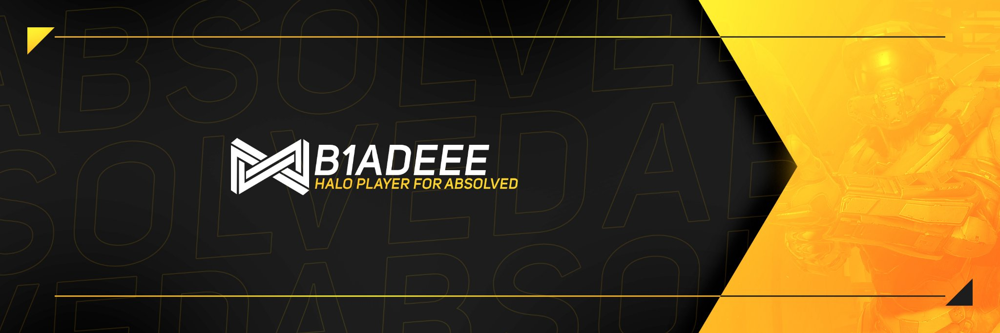
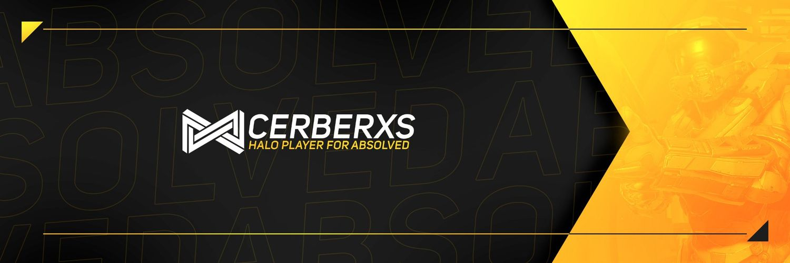

B1ADEEE
B1ADEEE is a young up and comer in the Halo esports scene. After his debut in the Faceit Halo ignite 2019 in Twickenham Stadium playing under Absolved and placing only top 28th in the 4v4 he realized maybe content creation was more his thing. other achivements have been holding the No.1 spot in league play on xbox on Call of Duty Infinte warfare, World war 2 and black ops 4 for the first month that they realse along with being in the top 50 irish players in advanced warfare on xbox. This shows the level of which he can play at if he puts in the time.
Boka
Boka is a very young and dedicated competitive Halo player. With his first 4v4 lan being under Absolved at Faceit Ignite 2019 he was only the age of 16 which is the minimum age required to play Halo esports. Unlike B1ADEEE boka stuck hard with halo and has been competeing in Europa Halo Online tourniments ever since along with some other smaller Leagues. Boka has great potentail at being a star in the Halo esports scene by the time he becomes 18. he has recently started livestreaming on twitch to show off some of his more glorified moments.
.jpg)
Cerberxs
Cerberxs may not be the youngest in the scene but im not sure who in the Halo Scene doesnt know of Cerberxs. He has been to multiple lans as both a coach for teams and a player so with that experience was picked up to play along side B1ADEEE and Boka in the Halo Faceit Ignite under Absolved. zane has also been known for his streaming and chilling with people in custom games. while he maybe not hte most competitive person in this team you wouldnt want to underestimate this mans effort .... as long as he takes his kidney meds of course.
FaceIt Halo Ignite 2019
The three of the above players all met as part of the Absolved Halo Esports teams. the team competed in the halo 3 4v4 on mainstage but sadly came up short against ex pros. All this was taking place in London at twickenham stadium which is known for its rugby but to these players its now known for its halo. They alos split up and competed in the Halo 5 2v2 and coming top 24 and top 18 Respectivly out of 64.
Absolved Esports
Absolved is what you can say is The Chiefs Henchmans boss. Absolved is the organization behind the owner ship of this content creation team. The dont just have a hand in halo in fact they have the least to do with halo. Absolved is very much known for their League of Legends and CSGO teams. With ceo Nudo at the helm Absolved is heading in a very good direction.